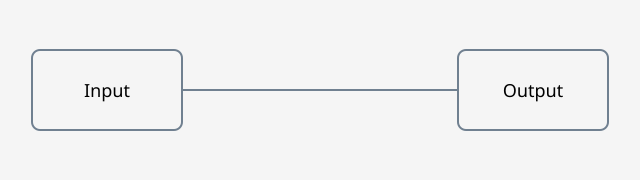
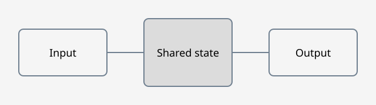

Children can contain any HTML or SVG.
One state, several views.
Experimental prototypeFictional calculation: the same inputs drive numbers, SVG geometry and animation.
Output per minute
Over an hour
One function drives the whole scene
View.bind('#scene', ({ speed, units }) => ({
debit: speed * units,
total: speed * units * 60,
fill: speed * units / 48 * 100
}));Compose choices and steps.
Arbitrary childrenShared controls switch between these cards.
Specific behavior can still use ordinary JavaScript.
Custom content
Layouts, drawings and controls stay author-defined.
Compare without writing the controls.
Wipe

Synthetic diagrams. Use the range with a pointer or keyboard.
One transport for several videos.
Linked playbackPlay, pause, shared position, speed and restart. Synthetic silent clips, not performance measurements.
Opt-in prototype: include the script and styles yourself. No native view fence or automatic runtime injection is implemented.